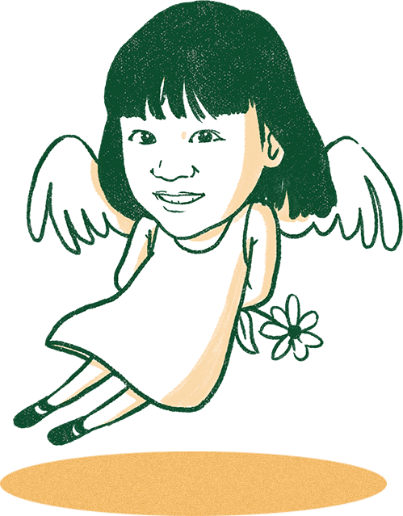

Chưa bao giờ, bóng đá Việt Nam lại trải qua một năm đầy chấn động đến thế. Sự thành công rực rỡ của U23 Việt Nam và ĐTQG Việt Nam là lời khẳng định cho một thế hệ vàng thực sự và tràn đầy tiềm năng trong tương lai dưới sự dẫn dắt của HLV Park Hang-seo. Tiền đạo này luôn lao về phía trước tìm kiếm "bàn thắng" mới.
Á quân U23 châu Á, đệ tứ anh hào Asiad và vô địch AFF Cup 2018 là "cú hat-trick" chấn động châu Á, đưa Việt Nam lên ngôi đầu khu vực, với một đội hình trẻ trung, gắn kết, có chiều sâu, xuất sắc về chuyên môn và vững vàng, bản lĩnh trong cuộc sống. Báo châu Á phải thán phục: "Với thế hệ vàng hôm nay, bầu trời Đông Nam Á là quá bé cho những chiến binh Rồng Vàng Việt Nam".
Sở hữu tốc độ đáng kinh ngạc, VinFast được xem là tiền đạo tân binh đáng gờm nhất trong đội bóng năm nay. Với phong cách "chơi bóng" hiện đại, VinFast mang đậm tính duy mỹ của Italia, hiệu quả của Đức, nhưng lại chứa đựng đầy niềm tự hào dân tộc. Dù vừa ra đời, VinFast đã tỏa sáng ở sân chơi Paris Motor Show, đồng thời nhận giải Ngôi sao mới.
Sau bàn thắng mang đẳng cấp thế giới ở nước Pháp, VinFast lại tiếp tục tạo nên cơn sốt nhờ cú poker ngay tại Hà Nội với màn chào sân nhà cùng 4 mẫu xe: LUX SA 2.0, LUX A 2.0, Fadil và Klara. Với chiến lược bài bản, nền tảng vững chắc, hy vọng tiền đạo này sẽ đưa nền kinh tế Việt tỏa sáng hơn nữa nhờ những sản phẩm mang đậm tinh thần Việt Nam với chất lượng thế giới.
Tại chung kết "Britain's Got Talent 2018", Quốc Cơ - Quốc Nghiệp đã khiến người hâm mộ toàn thế giới sửng sốt khi thực hiện cú nhảy sinh tử từ trong tư thế "người chồng người". Dù chỉ lọt vào Top 5 chung cuộc nhưng hình ảnh 2 anh em nhưng cầu thủ tiền vệ cánh trái ấy, đã khuấy đảo sân bóng cảm xúc, tự hào của hàng chục triệu người Việt. “Đây là đẳng cấp Olympic chứ không phải một cuộc thi tài năng. Tôi sẽ nhớ màn diễn này suốt đời” – Giám khảo khó tính Simon Cowell thán phục.
Để có được vinh quang ấy, những nghệ sĩ xiếc như Cơ – Nghiệp phải dành cả tuổi thanh xuân khổ luyện, thậm chí thường xuyên đối mặt với hiểm nguy tính mạng. "Chúng tôi muốn thể hiện được tinh thần bất khuất của người Việt Nam. Người Việt Nam luôn ngẩng cao đầu" – Cơ, Nghiệp khẳng định.
Lần đầu tiên ở VN, một bệnh nhân chết não hiến một lúc 6 tạng. Đã có 500 y bác sĩ tham gia thực hiện 6 ca mổ cùng lúc. Người truyền lại sự sống quý báu ấy là anh Dương Hồng Quý (43 tuổi, Ninh Bình).
Trong khi kỷ lục này được công bố ngày 24/12 tại BV Việt Đức, ở đầu kia đất nước, bé Huy - được ghép một quả thận của anh Quý - đang bước những bước bình phục ở BV Nhi đồng 2. Bé tỉnh táo, tự ăn uống, hồng hào, nói cười vui vẻ.
Kỷ lục hiến tạng của tiền vệ Dương Hồng Quý, không chỉ cứu được 6 người. Tinh thần thi đấu quả cảm đến hơi thở cuối cùng ấy, sẽ truyền cảm hứng cho hàng ngàn pha kiến tạo khác hồi sinh bao số phận, trên sân bóng cuộc đời.
Từ những mảnh lộn xộn, rời rạc với thành tích vô cùng tệ hại dưới thời HLV Hữu Thắng, "kiến trúc sư" Park Hang-seo đã kết nối, lắp ghép, phát huy hết những phẩm chất xuất sắc nhất của chính những con người ấy. Với vai trò "bộ não", HLV Park Hang-seo đã xây dựng lên một đội bóng có thể tạo nên những điều kỳ diệu, đặc biệt là ý chí chiến đấu dường như bất khả chiến bại.
Tiền vệ tổ chức này, không chỉ tổ chức thành công đội bóng trên sân, mà còn truyền cảm hứng cho đội bóng dân tộc Việt Nam. 365 ngày với quá nhiều những cảm xúc, quá nhiều những giây phút thăng hoa sẽ còn được nhớ mãi cùng người đàn ông ngoại quốc giản dị, luôn đặt tay lên lá cờ Việt Nam trên ngực trái trước mỗi trận bóng lăn.
Từ một cô gái dân tộc hoang dã, H'Hen Niê đã tạo nên kỳ tích chưa từng có trong lịch sử nhan sắc Việt: lọt Top 5 Hoa hậu Hoàn vũ thế giới.
Đặc biệt, Hen Niê đã quyên góp toàn bộ 100% số tiền thưởng nhận được từ cuộc thi cho các hoạt động xã hội. Sắc đẹp, vẻ đẹp tâm hồn, nỗ lực vượt khó của Hen Niê được các hãng truyền thông quốc tế như CNN, BBC... ngợi khen không tiếc lời.
Giản dị và chân thành, H'Hen Niê thực sự đã phát động một cơn lốc cảm hứng cho rất nhiều bạn trẻ với câu nói: "Tôi là H'Hen Niê. Tôi là người dân tộc thiểu số, đáng lẽ sẽ lấy chồng lúc 14 tuổi. Nhưng không, tôi chọn giáo dục. Đứng tại đây, tôi muốn nói tôi làm được và bạn cũng có thể làm được".
Suốt hơn 3 năm, lão nông Phạm Tấn Lực liên tục thu thập chứng cứ gửi đến các cơ quan chức năng tố cáo những sai phạm trong khi thi công dự án cao tốc Đà Nẵng Quảng Ngãi có vốn đầu tư hơn 34 nghìn tỉ đồng.
Hành trình của lão nông phải chịu đựng những lời đe dọa tính mạng, những trận đòn thù và không ít lần từ chối "những viên đạn bọc đường". Dù phải xin tiền vợ con để tìm ra sự thật, ông Lực vẫn không nản chí.
Nhờ sự chốt chặn hiệu quả của hậu vệ cánh này, mà những “tiền đạo sai phạm” đã bị rút thẻ đỏ, đưa ra ánh sáng. “Nhiều người nói tôi làm không công, đã nghèo còn muốn làm anh hùng nhưng tôi không nghĩ vậy. Tôi muốn những việc làm sai trái được kiểm tra, xử lý” – ông Lực nói
Từ Thường Châu tuyết trắng đến Mỹ Đình rực lửa, phía sau thành công của U23 Việt Nam và ĐTQG Việt Nam là sự ủng hộ cuồng nhiệt, quên mình của người hâm mộ Việt Nam. Đã 10 năm rồi, người ta mới thấy trên khắp dải đất hình chữ S này, nơi đâu cũng thắp lửa tiếp thêm sức mạnh cho Quang Hải, Công Phượng, Anh Đức, Văn Lâm... đoạt lấy thành công rực rỡ.
Người hâm mộ VN có rất nhiều tố chất điển hình: Chắc chắn như Đình Trọng, máu lửa như Quế Ngọc Hải, bùng cháy như Duy Mạnh. Họ khiến cả châu Á phải ngả mũ bởi tình yêu bóng đá cuồng nhiệt đến hoang dã. Họ vừa “giao trách nhiệm” vừa là điểm tựa, động lực cho đội tuyển tiến tới vinh quang. Họ khiến nhiều HLV và cầu thủ nước ngoài ước ao: Giá nước họ cũng có được cầu thủ thứ 12 như thế…
Bà Tư, mẹ anh bảo vệ Trần Văn An tâm sự: “Nó chết vậy chớ có ai quên nó đâu. Bên chung cư mấy đứa con nít nhỏ xíu cũng biết hết, nó vô đây nói chú An cứu con nè, bác An cứu con nè. Nó chết nhưng mà cứu được nhiều người như vậy… thì thôi tui cũng được an ủi”.
Nhã, chiến sĩ PCCC kể lại việc cứu một phụ nữ mang bầu: “Lúc đó mặt chị ấy cũng đen khói, em cũng vậy, chẳng ai nhìn ra ai hết. Em rất muốn tìm lại chị đó để hỏi coi chỉ có mẹ tròn con vuông không, cháu bé sanh ra có được mạnh khỏe không”.
Nhờ tinh thần lăn xả quên mình của những anh hùng như anh An, anh Nhã mà hàng trăm mạng người được cứu thoát khỏi bàn tay thần hỏa trong đám cháy chung cư Carina.

"Tôi đã vô cùng xúc động khi được biết Hải An bé nhỏ đã trò chuyện về việc hiến mô tạng cùng mẹ của mình khi con đang vật lộn với đau đớn trên giường bệnh. Con đã làm được một điều khó tin nhưng là sự thật" - Bộ trưởng Y tế Nguyễn Thị Kim Tiến viết lời từ biệt Hải An (7 tuổi). Bé mất chiều 22/8/2018 vì căn bệnh u não quái ác.
Quy định của pháp luật chỉ cho phép nhận tạng người từ 18 tuổi trở lên, nên bệnh viện chỉ có thể nhận giác mạc hiến từ Hải An. "Món quà ánh sáng" của bé được trao cho hai người.
Không chỉ khiến hàng triệu trái tim xúc động, trong "trận đấu của nhân tâm", "hậu vệ cánh" nhỏ bé Hải An đã truyền cảm hứng để số người thổi đăng ký hiến mô tạng ở VN tăng đột biến
“Ủy ban Kiểm tra Trung ương đã hoạt động tích cực, theo phương châm 'nói ít làm nhiều' và được ví như 'thanh bảo kiếm' quyết diệt trừ nạn tham nhũng, chạy chức, chạy quyền. Nhìn vào kết quả công việc, có thể khẳng định cơ quan này đã xử lý khối lượng công việc khổng lồ” - ông Vũ Quốc Hùng, nguyên Phó chủ nhiệm Thường trực Ủy ban Kiểm tra Trung ương nhận xét.
Hơn 20 năm làm công tác đảng, theo ông Hùng câu chuyện kỷ luật cán bộ trong Đảng không phải bây giờ mới có nhưng trước đây, kỷ luật thường mới chỉ dừng ở mức phê phán chung chung. Còn nay, Ủy ban Kiểm tra đã chỉ ra đúng người, đúng tội. Không chỉ xử lý về mặt nội bộ mà còn cả mặt pháp luật. Vì vậy Ủy ban Kiểm tra được ví là "thanh bảo kiếm của Đảng".